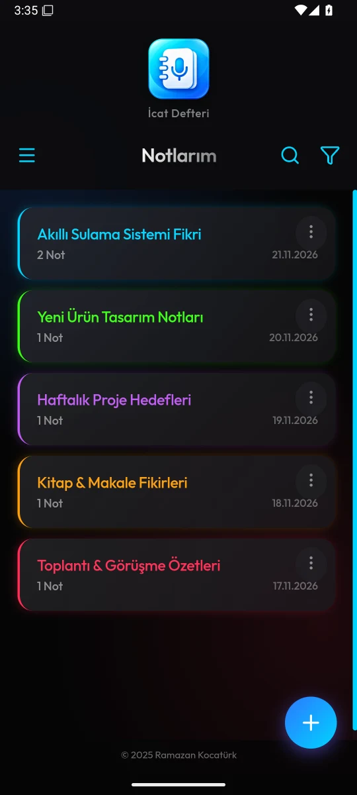
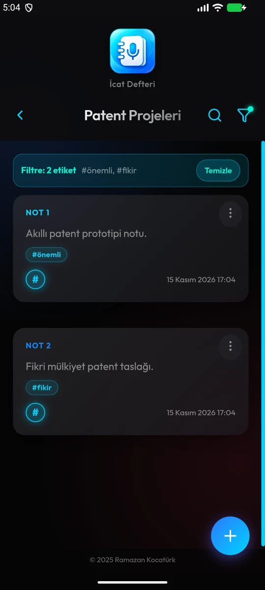
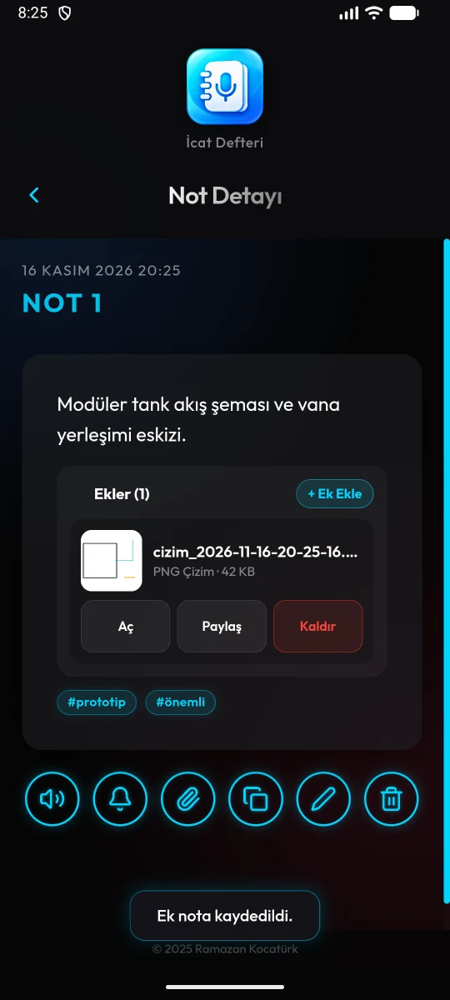
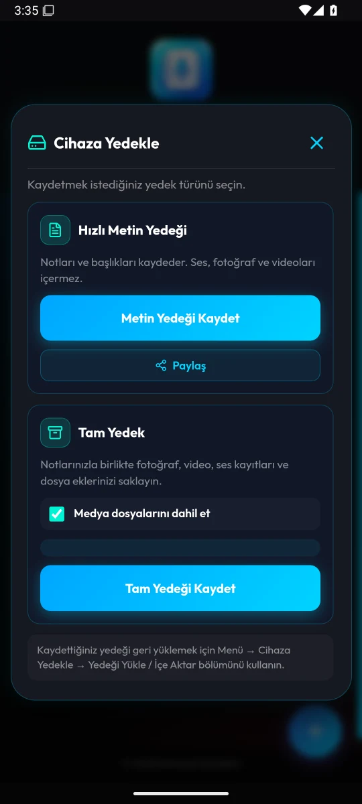
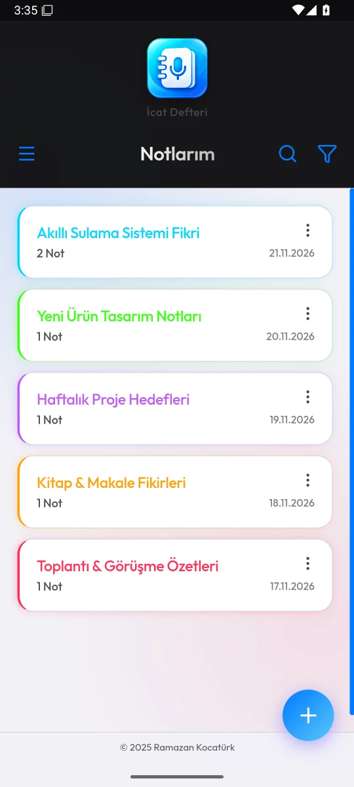
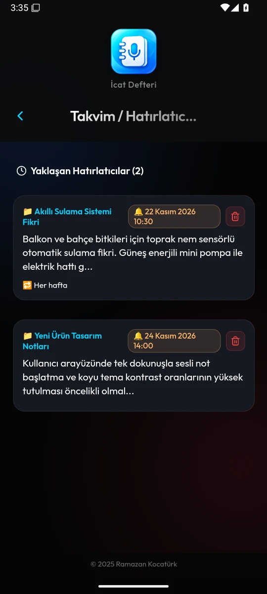
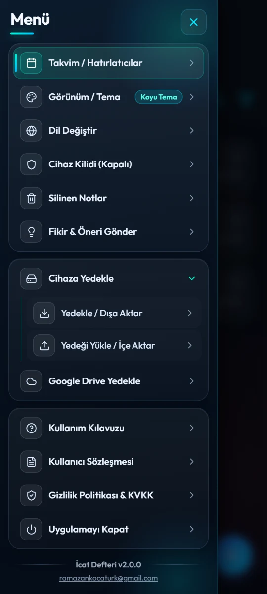
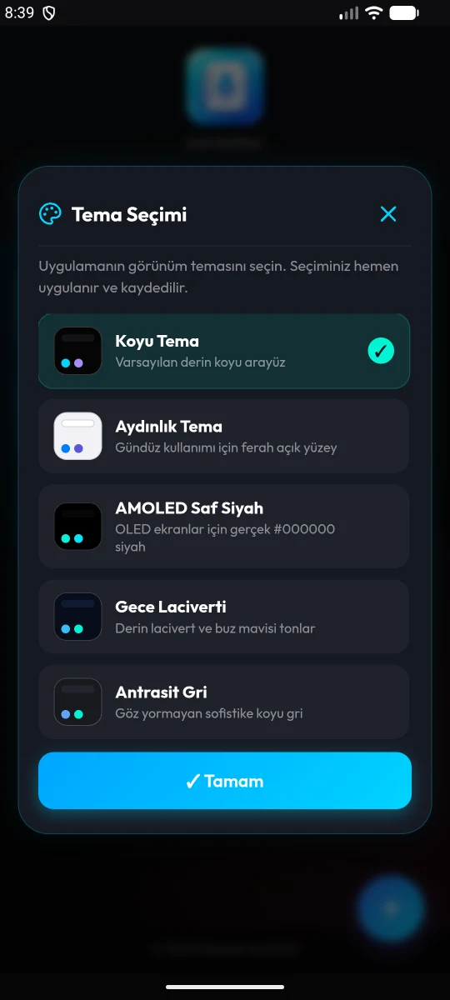
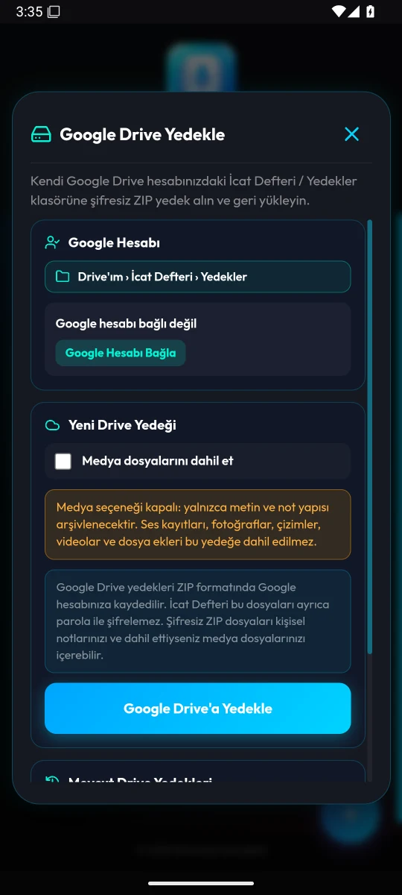

Hızlı fikir yakalama
İlham geldiği anda yazmakla vakit kaybetme. Konuşarak not oluştur veya gerçek ses kaydı alarak düşünceni anında sakla.
Aklına gelince kaydet.
Fikirlerini saniyeler içinde sesle metne dönüştür veya gerçek ses kaydı al. Notlarını başlıklar, etiketler, medya ekleri ve hatırlatıcılarla düzenli tut; verilerin cihazında güvende kalsın.

İster masanda bir proje planla, ister yürürken sesli fikir kaydet; İcat Defteri karmaşadan uzak, hızlı ve düzenli bir çalışma deneyimi sunar.
İlham geldiği anda yazmakla vakit kaybetme. Konuşarak not oluştur veya gerçek ses kaydı alarak düşünceni anında sakla.
Başlıklar, renkli vurgular, etiketler, pinleme ve hızlı arama ile kişisel notlarını ve iş projelerini saniyeler içinde bul.
Notlarına fotoğraf, video, PDF, el çizimi ve tek seferlik ya da tekrarlayan hatırlatıcılar ekleyerek hiçbir detayı atlama.
Fikir üretmekten arşivlemeye kadar tüm not alma akışın tek bir hızlı ve sade Android uygulamasında.
Konuşmanı anında metne dönüştür. Noktalama komutlarıyla akıcı ve düzenli metin notları oluştur.
Sadece metin değil, düşünceni kendi ses tonunla yüksek kaliteli M4A formatında doğrudan nota ekle.
Tek seferlik veya günlük, haftalık, aylık, yıllık tekrarlayan bildirimlerle önemli görevlerini zamanında hatırla.
Fotoğraf, video, PDF, belge ekleri ve el çizimi eskizlerle fikirlerini görsel olarak zenginleştir.
Renkli başlık kartları, #etiket filtreleme, sabitleme ve anlık arama ile yüzlerce not arasında kaybolma.
Notlarını telefonunun ekran kilidi, parmak izi veya yüz tanıma korumasıyla yetkisiz erişime karşı koru.
Koyu Tema, Aydınlık Tema, AMOLED Saf Siyah, Gece Laciverti ve Antrasit Gri arasında anında geçiş yap.
Türkçe, İngilizce, Almanca, Fransızca, İspanyolca, İtalyanca ve Portekizce tam arayüz ve kılavuz desteği.
Notlarını JSON (hızlı metin) veya medya dosyalarıyla birlikte şifresiz ZIP arşivi olarak cihazına kaydet ve geri yükle.
İstersen kendi Google Drive hesabındaki İcat Defteri / Yedekler klasörüne şifresiz ZIP yedeği al ve yeni telefona aktar.
Kullanılabilir özellikler, yüklü uygulama sürümüne göre değişebilir. Bazı yeni özellikler (gerçek M4A ses kaydı, medya ekleri, 5 tema, tam ZIP ve isteğe bağlı Google Drive yedekleme) V2.0.0 sürümüyle birlikte sunulmaktadır.
Karmaşık kurulumlar veya zorunlu hesap oluşturma yok. Uygulamayı aç ve hemen kaydetmeye başla.
Yeni başlık oluştur; sesle dikte et, klavyeyle yaz veya doğrudan ses kaydı başlat.
Başlık renkleri, etiketler, sıralama ve arama ile tüm notlarını tertipli tut.

Fotoğraf, belge veya çizim bağla; tarih ve tekrar seçerek hatırlatıcı kur.

Notlarını tek dokunuşla cihazına (JSON / ZIP) veya kendi Google Drive hesabına (ZIP) yedekle.

İcat Defteri, geliştirici sunucularına veri göndermeyen yerel öncelikli bir mimariyle tasarlanmıştır.
Notların, ses kayıtların ve eklerin varsayılan olarak yalnızca senin Android cihazında saklanır. Geliştirici bu verilere erişemez.
İsteğe bağlı uygulama kilidi, Android sisteminin kendi PIN, desen, parmak izi veya yüz tanıma doğrulamasını kullanır.
Cihaza Yedekle bölümü hızlı metin için JSON, tam arşiv için şifresiz ZIP oluşturur. Google Drive Yedekle bölümü yalnızca kendi Google Drive hesabındaki İcat Defteri / Yedekler klasörüne (drive.file izniyle) şifresiz ZIP yükler. Uygulama yedek dosyalarına ayrıca parola ile şifreleme uygulamaz.
Sesle metin yazdırma özelliği Android / Google ses tanıma hizmetini kullanabilir ve cihaz yapılandırmasına göre internet gerektirebilir. Google Drive yedekleme tamamen isteğe bağlıdır ve dilediğin zaman bağlantıyı kesebilirsin.
Örnek demo notlarla yakalanmış gerçek uygulama ekran görüntüleri. Büyütmek için herhangi bir ekrana tıkla.





İcat Defteri hakkında en sık sorulan soruların net ve dürüst yanıtları.
İcat Defteri’ni Google Play üzerinden indir, aklına gelen her fikri saniyeler içinde güvenle kaydet.
Destek ve iletişim: ramazankocaturk@gmail.com